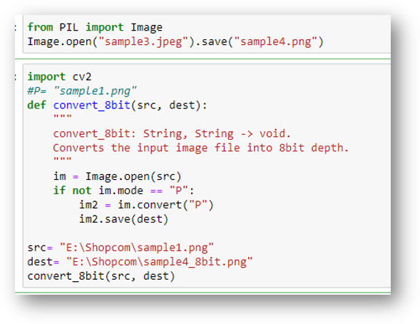
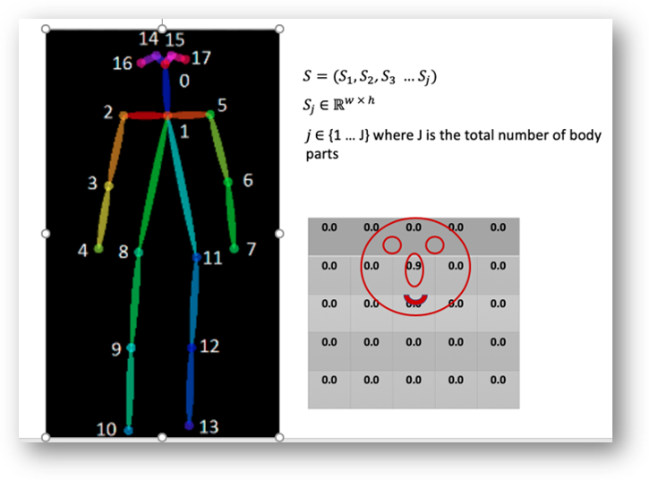

The research papers and online repos provided good enough data to train the model but they were of a particualr type. If tested on random images it would then it might not give appropiate output. Spreadshirts.com and redwolf.in were the websites were we found one of the 2 datasets i.e. only 2D photo of T-shirt or shirt. We are trying to collect 500-1000 in number so that we can test the model once it is trained.
Apart from the web scraping we had to also change the properties of the scraped images according to the model requirement, where we used data pre-processing. The depth of image and dimesions were to be kept to -bit and 256x192 pixels respectively.
Changing properties of image
Using OpenCV and PIL library in Python

Initial Approach for Pose Estimation
Human Pose Estimation is a core problem for understanding of people in images and videos. In Single Person Pose Estimation, the problem is simplified by assuming the image has only one person. Multi Person Pose Estimation is a more difficult because there are multiple people in an image.
A common approach is to follow a two-step framework which uses a human detector and solve the pose estimation for each human.
First, the image is passed through a baseline network to extract feature maps(F).
Then, the feature maps are processed with multiple stages CNN to generate:
1) a set of Part Confidence Maps
2) a set of Part Affinity Fields (PAFs)
Part Confidence Maps: a set of 2D confidence maps S for body part locations. Each joint location has a map.
Pose Estimation
Explaination of single person pose estimation

Multi-Person Parsing using PAFs
In this section, we give an overview of the greedy algorithm which is used to parse poses of multiple people from confidence maps and part affinity fields.
The parsing process can be summarized into three steps:
Step 1: Find all joints locations using the confidence maps.
Step 2: Find which joints go together to form limbs using the part affinity fields and joints in step 1.
Step 3: Associate limbs that belong to the same person and get the final list of human poses.
Loss Function
In order for the network to learn how to generate the best sets of S and L, the authors applies two loss functions at the end of each stage, one at each branch respectively. The paper uses a standard L2 loss between the estimated predictions and ground truth maps and fields. Moreover, the authors has added some weight to the loss functions to address a practical issue that some datasets do not completely label all people. The loss functions at a particular stage t are given as follows.